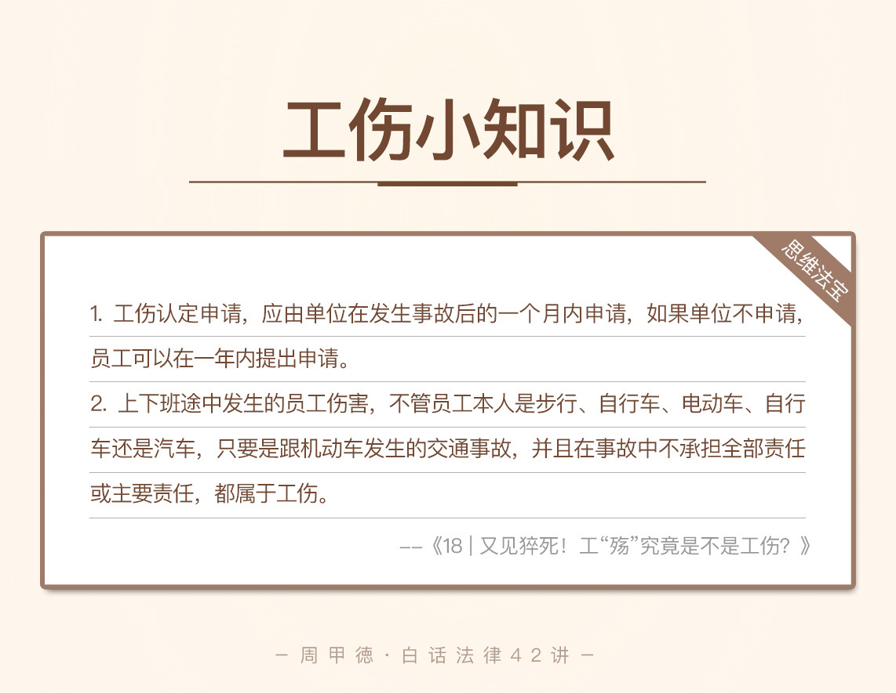

- 00 开篇词 这年头，你真应该懂点法律常识.md.html
- 01 “老周，我想知道” 常见法律认知盲区（一）.md.html
- 02 “老周，我想知道” 律师就在你身边（二）.md.html
- 03 “老周，我想知道” 律师就在你身边（三）.md.html
- 04 “老周，我想知道” 律师就在你身边（四）.md.html
- 05 创业未捷老板跑，社保工资哪里讨？.md.html
- 06 保密还是“卖身”，霸王条款怎么看？.md.html
- 07 编造流言蹭热度？看守所里降温度！.md.html
- 08 合同在手欠款难收，报警有用吗？.md.html
- 09 致创业：谁动了我的股权？.md.html
- 10 又见猝死！工“殇”究竟是不是工伤？.md.html
- 11 期权的“前世今生”.md.html
- 12 裁员面前，你能做的还有什么？.md.html
- 13 抄袭、盗图为什么做不得？.md.html
- 14 加班、工资、休假，你知道多少？.md.html
- 15 受贿原来这么“容易”.md.html
- 16 今天你用“VPN”了吗？.md.html
- 17 漏洞在眼前，可以悄悄破解吗？.md.html
- 18 “爬虫”真的合法吗？.md.html
- 19 非法集资到底是个啥？.md.html
- 20 黄色网站？不仅仅是“黄色”罪名.md.html
- 21 谁修改了我的积分资产？.md.html
- 22 外挂真能大吉大利吗？.md.html
- 23 如何看待“从删库到跑路”？.md.html
- 24 “伪基站”是你的避风港吗？.md.html
- 25 “网络诈骗”真的离你很远吗？.md.html
- 26 智斗中介：“北上广”租房图鉴.md.html
- 27 买买买！买房的“避坑”指南.md.html
- 28 闪婚又闪离，彩礼怎么理？.md.html
- 29 离婚还想和平？你要这么做.md.html
- 30 遗产继承的爱恨情仇.md.html
- 31 骗术升级？假结婚、假离婚的那些事儿.md.html
- 32 孩子学校受伤，谁之过？.md.html
- 33 如何让欠债还钱真正“天经地义”？.md.html
- 34 从透支到盗刷：人人须知的银行卡纠纷.md.html
- 35 远离“套路贷”的套路大全.md.html
- 36 危险！酒驾为什么被罚那么重？.md.html
- 37 老人倒地，“扶”“不服”？.md.html
- 38 “能动手就别吵吵”，代价你真的知道吗？.md.html
- 39 发生交通事故，如何处理？.md.html
- 40 交通事故综合法宝.md.html
- 41 婚姻家庭综合法宝.md.html
- 42 买卖房屋综合法宝.md.html
- 一键直达 法律专栏“食用”指南.md.html
- 加餐 “新冠肺炎”影响下，17个常见法律问题解答.md.html
- 结束语 法律，不会终止的篇章.md.html
- 捐赠
10 又见猝死！工“殇”究竟是不是工伤？
听说程序员没有不加班的，不知道你是否经历过这样的场景？月明星稀，夜深人静，抽着根烟，睁大眼睛，寻找bug。一旦找到bug位置，立刻扔掉烟头，在键盘上飞舞双手修改代码。消灭bug的心情很爽的，可代码是写不完的，bug也是改不完的。如果长期下去，你的头发、腰椎、颈椎都还能受得了吗？
比起这些问题，你可能还是会觉得，这是工作需要啊，没有办法，只能牺牲健康。但是，如果威胁到的是我们的生命，你还会这么想吗？
前不久，南京一家医院的急诊中心就发生了这么一个悲剧。急诊中心半夜接诊了一位患者小王，因为胸口疼痛难忍而住院。尽管医院方面全力抢救，但突发大面积的心肌梗塞，最终还是夺走了小王的生命。
后来经过医院的调查，才发现，小王虽然年纪轻轻刚刚30岁，但是身体一直属于亚健康状态。因为在外企做开发，他经常需要加班，最近一个月更是连续加班，天天熬夜，突发的心肌梗塞也跟这些脱不了关系。
这样的例子并不少见，也非常可惜。毕竟人活着，才有一切可能，失去生命，没有了数字“1”，后面跟着再多的“0”都是没用的。工作健康问题真的不容忽视，毕竟身体是革命的本钱。另一方面，从我作为律师的角度来说，你也应该了解，一旦因为工作原因出了健康问题，到底要怎么办？公司究竟管不管？
这节课，我们就来学习，跟工伤相关的一些知识。什么是工伤？哪些情况构成工伤？工伤怎么认定，以及应该怎么解决？这些，都是你必备的常识。同时，我也会给你分析一些常见的工伤问题，解决你的疑惑。
法律知识
工伤
首先来看第一个知识，工伤的定义。工伤，顾名思义，因为工作而受伤，一般主要有这么几种情况：
工作时间，在工作地点，因工作原因受到的伤害。
工作时间前后，在工作地点，正在做相关的准备或收尾工作时受到的伤害。
工作时间，在工作地点，履行工作职责时，受到的暴力等意外伤害。
因工外出期间，因工作原因受到的意外伤害、暴力伤害。
因工外出期间，因工作原因发生事故下落不明的，不管生死，都属于工伤。
另外，特别强调的是，职业病和上下班途中的“机动车交通事故”都属于工伤。当然，机动车交通事故中，如果你本人不承担主要责任或全部责任时，受伤就属于工伤范围。
职业病本身包含的范围太广，在这里我就不做详细说明了，有兴趣可以阅读《中华人民共和国职业病防治法》。而跟我们关系比较密切的几种工伤情况，稍后我都会讲到。
工伤认定
接下来我们再看第二个知识，工伤认定，也就是到劳动部门申请鉴定是否属于工伤。这里要注意的是，必须要有劳动部门出示证明，才能在法律上确认为工伤。而工伤认定本身，必须要由用人单位或者个人主动提出申请，才能够进行。没有申请，就没有认定。
具体来看：
通常，用人单位应该在，事故发生当天开始算起的30天内，向所在地的社会保障部门提出工伤认定申请；
如果用人单位在30天内没有提出申请，那么受害者可以在事故发生起一年内，向单位所在地的人力资源和社会保障局提出申请。
另外，用人单位没有在30天内提出申请的，在受伤者提出被认定为工伤时，这30天内的相关费用由用人单位承担。
视同工伤
第三个知识，我们来看，视同工伤，什么意思呢？其实就是原本不应该属于工伤，但是为了照顾员工的利益，法律上规定了一些情况也可以看成工伤对待，享受正常的工伤待遇。
工伤的概念我们前面说了，主要是工作原因，而视同工伤更多是因为疾病引起的。因为发病原因是一般自身健康问题，我们又很难说清楚身体健康与工作的关系，自然也就难以界定是不是工伤。
但是，员工发病死亡的例子实在不少见，给不少家庭也是带来了地震般的灾难。为了充分保护劳动者的利益，《工伤保险条例》对工伤认定做了扩展，把工作时突然发病死亡，或是发病后送到医院抢救无效，48小时内死亡的情况，都认定为“视同工伤”。
排除工伤认定
第四个知识，我来说一下排除工伤认定的情况。《工伤保险条例》规定了下面的几种情况，会被排除工伤认定：
故意犯罪的情况；
醉酒或者吸毒的情况；
自残或者自杀的情况。
也就是说，只要出现了这三种情况，不管其他情节是怎样的，都会被拒绝工伤认定以及视同工伤认定。
不过，如果是工作期间，员工违反了工作流程，或者是疏忽大意、精力不集中等过失行为，造成了事故的，不属于上面三种情况，因此也不会影响工伤的认定。
另外，如果用人单位聘用的是超过法定退休年龄的员工，工作时间、工作原因伤亡的，一样适用《工伤职险条例》的工伤认定，属于工伤的话，同样享受工伤保险待遇。
工作保险待遇
工作保险待遇项目，主要有：治疗费、住院伙食补助费、康复治疗费、护理费、辅助器具费、一次性伤残补助金、伤残津贴、一次性伤残就业补助金、一次性工伤医疗被助金、一次丧葬被助金、抚恤金、一次性工亡补助金。一般要根据具体的工伤情况，判断可以享受哪些待遇。
情景分析
接下来，我主要解释几个最常遇到的场景。
第一个场景，因为连续加班，在工作时发病死亡，算不算工伤？如果是加班时发病死亡，就像我们开头故事里小王的情况，又算不算工伤呢？
显然，因为加班，在工作时间发病死亡，视同工伤，享受工伤保险待遇。加班时间其实同样属于工作时间，发病死亡的也应视同工伤，享受工伤保险待遇。
第二个场景，在工作中，突发脑溢血，送到医院抢救后，48小时（两天）内死亡，算不算工伤？那如果是在医院抢救的48小时以后死亡，算不算工伤呢？
前面提到过，工作中突然发病，如果送医院时没死，但抢救无效，48小时内死亡的，视同工伤；而抢救无效，但超过48小时死亡的，就不能视同工伤了。你可能会疑惑，同样在工作时间发病然后抢救无效死亡，为什么48小时内就视同工伤，超过48小时就不算呢？
其实这里的48小时，即使改成72小时，96小时，依然不能覆盖所有人，只能说是根据现实情况，尽量地照顾到员工的利益，发病原因本身难说清楚，用人单位的成本自然也要考虑进去。另外，如果是在工作时发病但没有死亡的，不视为工伤，不能享受工伤待遇。
另外要注意的是，第一、二场景提到的病，并不是职业病，主要是指自身原因造成的和工作无关的疾病。
第三个场景，在上、下班途中，被汽车撞伤，算不算工伤？被自行车撞伤，算不算工伤？
上、下班途中被机动车撞伤的，如果你无责任或者承担的是次要责任或同等责任的，那就属于工伤；但如果需要承担主要责任或是全部责任的，则不属于工伤。这里强调的是机动车，如果属于非机动车，比如说自行车、手推车，不管啥时候出事儿，也不管责任如何划分，都不属于工伤。
第四个场景，也是很多程序员比较关心的问题，整天在公司加班写代码，回家也要继续写，整天久坐，得了颈椎病，算不算工伤呢？
很遗憾，颈椎病目前还不能算工伤。《工伤保险条例》还没有拓展到这里，毕竟颈椎病只能算是普通病的范畴，连突发疾病没有死亡的都不算，更何况颈椎病呢。不管是颈椎病，还是高度近视、胃病，都很难划分为工伤，还是得靠我们自己注意健康，加强锻炼。
思维法宝
在这里，我也总结了，跟我们关系最密切、最容易起争议的几点。
工伤认定申请，应由单位在发生事故后的一个月内申请，如果单位不申请，员工可以在一年内提出申请。
上下班途中发生的员工伤害，不管员工本人是步行、自行车、电动车、自行车还是汽车，只要是跟机动车发生的交通事故，并且在事故中不承担全部责任或主要责任，都属于工伤。
对于工伤中“途中”的认定，既包括在正常工作时间的上下班的途中，也包括因加班或单位安排的其他事情外出的途中。另外，符合基本常识的合理时间段的迟到途中，也属于这个范围。
工作中突然发病死亡，视同工伤；在工作中突然发病，但没有死亡，不能视同工伤；在工作中突然发病，经抢救48小时内（含48小时）死亡，视同工伤，超过48小时死亡，不能视同工伤。

今天讲了这么多的工伤知识，无非想让你心里有谱，遇事不慌。但最大的祝福，还是希望你一辈子都别遇到工伤。
最后，我给你留下一个思考题，这也是来自于我们专栏一个同学的留言：没到下班时间，偷偷溜号，不幸的是，在回家路上发生了车祸，被一辆闯红灯的汽车给撞了，这算不算工伤呢？
欢迎留言写下你的回答，以及对于今天内容的思考和疑惑。也欢迎点击右下角的“请朋友读”，分享给你的亲朋好友。远离工伤，从了解做起。
© 2019 - 2023 Liangliang Lee. Powered by gin and hexo-theme-book.